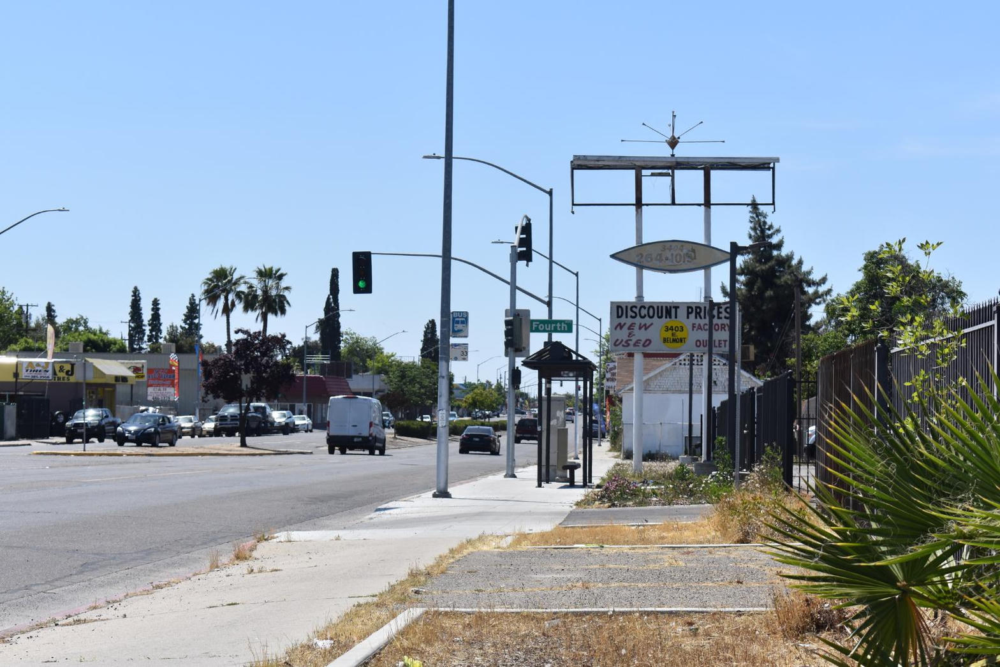
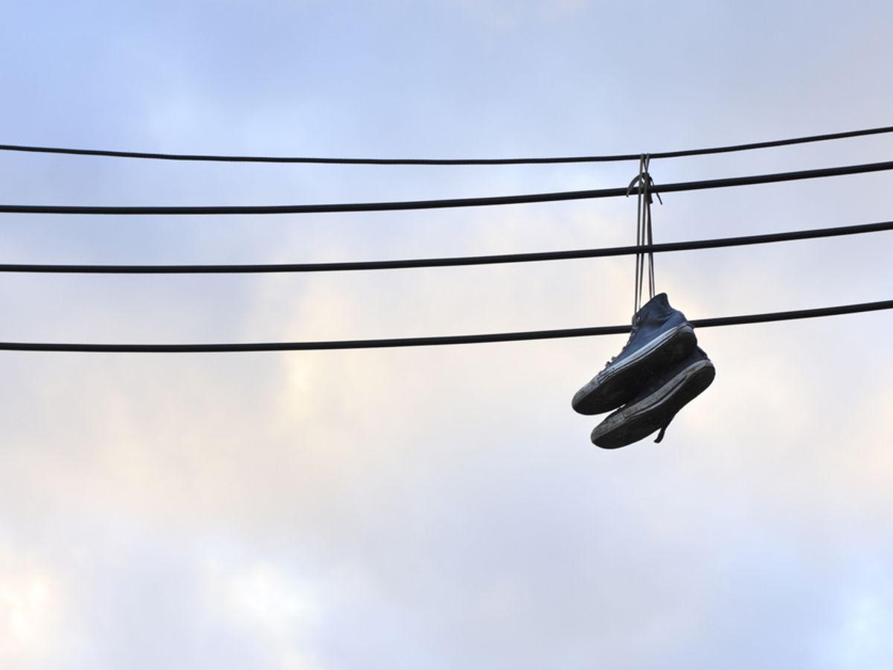
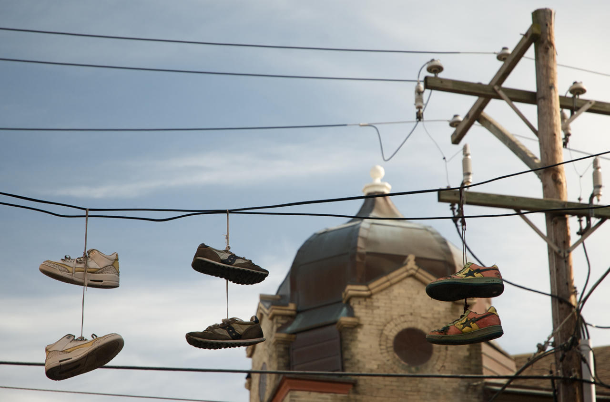
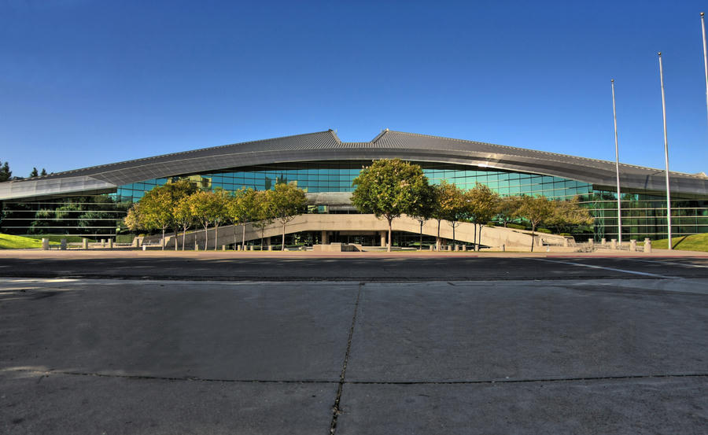

What a person actually saw
Earlier this week, north of the Bess tax office on Blackstone, a group of ten or more people ran an open dice game. Two crouched over the throw. Others stood. At least one person held a lookout posture. The rest treated it as a social hour: talk, trade, and a circle that does not dissolve when a car slows down.
That is not a novel. It is a sidewalk fact. The municipal code is written for exactly this picture. Fresno Municipal Code section 9-2505 says no person shall play, participate in, or bet on a game with cards, dice, or another device for money or anything of value on a street, sidewalk, pedestrian mall, alley, highway, or parking lot open to the public. Section 9-2504 adds a 300-foot school buffer for the same class of game. The city's property-management ordinance lists "gaming activities" among the habitual nuisances a property owner may not permit once on notice.
The "No Gambling" signs are not folklore. They are the city advertising a rule it already passed. The gap is between the sign and the hour that continues under it.
The same block is already in the file
Bess Taxes sits at 344 to 346 North Blackstone Avenue, ZIP 93701. Forty numbers north, at 385 North Blackstone, the city already moved.
On January 6, 2026, District 3 Councilmember Miguel Arias announced that Irene's Clothing and Discount Store at 385 North Blackstone had been shut as a "persistent source of nuisance and a public safety concern." Inspectors reported illegal gambling and the sale of prohibited drug paraphernalia. Arias said the city had a long citation record and significant fines. He also said the thing residents already know by sight:
"If you go by any given day of the week you'll see a long line of the transient population engaging in drug purchases and sales in that area."
That quote is not a neighborhood rumor. It is a sitting councilmember describing the same corridor in a published interview after a multi-agency inspection that included Fresno Police, code enforcement, and the state attorney general's office. The co-owner denied the gambling and drug claims and said inspections never happened. The city said the opposite and warned property owners they would be held to account for the activity inside their buildings.
So the steelman starts here. A later sidewalk dice game just north of Bess Taxes is not an isolated "kids playing." It is the outdoor version of a pattern the city already documented indoors on the same numbered block, in the same year, with the same two commodities stacked together: gambling and drugs.

Cluster identification, not one photo
A walking gait by itself is not an ID. A face by itself can be wrong. Together they get very accurate. The same logic applies to a known corner.
One factor: an open dice game for money on a public sidewalk, which 9-2505 already names.
Second factor: lookouts. A lookout is not a spectator. It is labor. People do not post a watcher for a friendly game of Yahtzee.
Third factor: hand-to-hand traffic moving through the same circle. Arias already described daily purchase-and-sale lines of transient traffic on that stretch. The observation of a social hour that mixes the throw with side deals is the outdoor rhyme of that indoor finding.
Fourth factor: shoes on a utility line. This one needs the honest limit. Snopes and police departments have said for decades that "shoefiti" is not a universal drug semaphore. Kids throw shoes. Memorials happen. Copycats happen. A pair of sneakers on a wire is not a search warrant. It is also not nothing when it sits over a corner that already has the other three marks. The claim is not "the shoes prove the sale." The claim is that criminals, residents, and city staff can all read a cluster the way they read a person: no single trait is enough, the combination is.


Why Vegas has no street craps and Fresno still does
Nevada did not ban street craps because dice are immoral. It banned the unlicensed game because the licensed house is a tax machine and a tourism brand. Competition on the sidewalk is not allowed to undercut the casino.
California is the opposite architecture. Penal Code 330 hits banking and percentage games. A social craps circle is not always a "house." That is why cities write their own sidewalk rules. Fresno did. Section 9-2505 closes the hole 330 leaves on the street. Card rooms are licensed and capped. Smoke shops are now required to post no-gambling signs and can lose their right to operate for gambling as an "egregious" nuisance. The legal design is not mysterious. Unlicensed public dice is supposed to lose.
It does not lose on this stretch because enforcement is selective. Indoor shops get task-force days, cameras, and press conferences. The outdoor social hour is a misdemeanor ecosystem. Cite, release, repeat. Arias said the quiet part about shop fines in 2024 when inspectors found a hidden gambling wall that the owner claimed made more than $6,000 a month: city fines were not a deterrent. "In that case, I would run a casino every month then." The same math applies to a sidewalk bank that pays in cash and never files a business tax.
Who holds the leash
Fresno police are not a free-standing army. The mayor is Jerry Dyer, who ran the department for 18 years before taking City Hall in 2021. He picked Paco Balderrama. After that resignation he backed Mindy Casto, now chief. Council writes the ordinances, passes the budget, and holds the press events when a shop is padlocked. Dyer's office has already told Blackstone business owners that police were directed to monitor the avenue, that weekly arrests were happening, and that the long-term plan includes lighting, cameras, business watch, and a campaign telling people not to hand cash and food to the unsheltered on the corridor.
That is the chain. If a ten-person dice circle with a lookout can hold a social hour in daylight on a posted block, the department is not missing a statute. It is operating inside a political tolerance band set by the people who hire the chief and fund the shifts. Calling that "cucked" is crude. The accurate version is simpler. Street-level officers do not get to invent a different city. They work the policy the mayor and council will actually defend in public.

The incentive that keeps the loop alive
The strongest version of the "they like the federal money" argument is not a cartoon of one man cashing a check. It is a budget machine that grows when the visible problem stays large enough to justify the next round.
Fresno has taken more than $51 million across six rounds of the state's Homeless Housing, Assistance and Prevention program. In March 2026 the city announced another $10.49 million in HHAP-6 to keep emergency beds open. Homekey and related programs bought motels on and near Blackstone and converted them into shelters with the promise of later permanent housing. HART teams clear encampments and steer people toward treatment as an alternative to a camping charge. The 2024 anti-camping ordinance is written that way on purpose. A second HART team was in the mayor's latest budget proposal.
None of that requires a conspiracy meeting. It requires a city that is now a grantee. Grantees report numbers. Numbers need a caseload. A corridor that stays visibly disordered produces the caseload, the shelter demand, the treatment referral, and the next application. Meanwhile the misdemeanor cycle (dice, loitering, possession, camping) produces activity statistics without retiring the spot. People who are addicted move through that loop because the loop is the product the system knows how to bill.
That is the steelman. Not "every social worker is a crook." The design pays to manage the condition. It does not pay a premium for making the corner boring.
What "do it now" actually means
The codes are not the missing piece. 9-2505, the drug-loitering rule, the property-nuisance article, the smoke-shop egregious-violation list, and Penal Code 330 when a house or rake is present are already on the books. January's raid proves the city can stack agencies when it wants a building.
Now means treating the outdoor cluster the same way the indoor cluster was treated.
- Name the sidewalk the way 385 was named. A known hour, a known landmark, a known lookout pattern.
- Put the property owners on written notice under the real-property management ordinance. Gaming and controlled-substance traffic on or about the parcel are already listed nuisances.
- Stop pretending a posted "No Gambling" sign is the enforcement. The sign without a consistent presence is set dressing.
- Measure success by whether the social hour dissolves, not by how many cite-and-release slips the week produced.
- Say in public that lookouts plus dice plus side traffic is the working definition of the spot, the same way gait plus face is the working definition of a person.
Arias already told property owners they would be held accountable. Dyer already told Blackstone businesses he had directed monitoring. Casto reports citywide crime down in the first half of 2026. Those statements and this sidewalk can both be true only if the department's win column is allowed to ignore a posted, recurring, mixed-use dice market in the middle of the spine.
They cannot both stay true if anyone in that chain is forced to walk the block at the hour it actually runs and then answer for the picture.